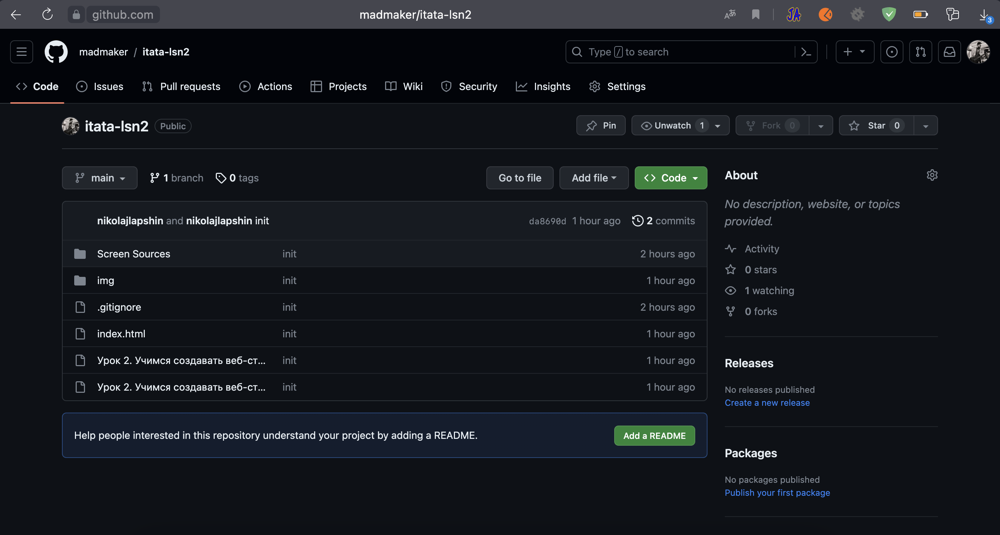

Урок 3. GIT. Система контроля
версий
- Урок 3. GIT. Система контроля версий
- Как работают команды IT 2
- Роли
- Грейды, Уровни
- Рабочий процесс, Workflow
- Совместная работа с помощью GIT
- Репозиторий
- Ветки
- GitHub.com
- Приватный или публичный
- Регистрация на GitHub
- Итоги:
- Задание
На этом занятии мы узнаем о git, github и контроле версий кода
 GitHub Homepage
GitHub Homepage
Как работают команды IT
Роли
- Заказчик озвучивает «хотелку» - идею, которую нужно реализовать. Это
может быть доработка существующего продукта, новые функции,
исправление ошибок или совершенно новый продукт. Заказчиком может
выступать и владелец бизнеса, и специалисты технической поддержки, и
клиенты - кто угодно, чью идею вы будете реализовывать
- Бизнес-аналитик описывает бизнес-требования к задаче. Он
связывается с заказчиком и подробно описывает, что нужно сделать,
какой результат должен быть на выходе, какими свойствами должен
обладать продукт.
- Архитектор прорабатывает архитектуру проекта: какие технологии будут
использоваться, какие интеграции, какие инструменты и как это все
будет между собой взаимодействовать
Дизайнер прорабатывает внешний вид нового продукта: интерфейс,
кнопки, формы, дизайн страниц, навигацию создает всю визуальную
часть. Но без кода.
GitHub homepage
- Системный аналитик описывает функциональные требования. В
сильном упрощении, можно сказать, что системный аналитик переводит
задачу на язык разработчиков: здесь уже описываются все функции,
кнопки, местоположения элементов на странице, взаимодействие
элементов между друг другом и другими системами.
- Frontend-разработчик занимается той частью приложения, с которой
взаимодействует пользователь: интерфейсы, страницы, личные
кабинеты, кнопки, формы. Именно фронтендер реализует дизайн в коде.
Как правило это следующие технологии: HTML, CSS/SASS, JavaScript/
TypeScript, Svelte/VuеJs/React. За серверную часть, хранение данных,
взаимодействие систем друг с другом фронтендер не отвечает. Он
отвечает только за визуальную часть, с которой взаимодействует
непосредственно пользователь.
- Backend-разработчик занимается серверной частью приложения. Это
база данных, это API, это обеспечение фронта данными, обработка
запросов с фронта, это интеграции с внутренними и внешними
системами, это работа с серверами. Тут выбор инструментов и
технологий довольно обширный, но для веба, как правило следующие:
Php/Js/Ts/GoLang/Python, MySQL/PostgreSQL/ClickHouse/OracleDB/
MongoDB/Redis, Docker, NginX.
- Тестировщик проверяет работу выполненной задачи, после того, как
разработчик ее завершает. Также тестировщик проверяет результат на
соответствие требованиям.
Грейды, Уровни
Коль уже заговорили о ролях, стоит рассказать и о грейдах.
Существует 3 базовых грейда разработчиков:
- - Junior - начинающий уровень. Тот, кто в состоянии сам решать простые
задачи, но не в состоянии самостоятельно выполнять сложные задачи, где
нужно проектирование или чистый грамотный код и структура.
- - Middle - средний уровень - рабочие лошадки разработки. Большую часть
кода пишут они. Помогают джунам, могут что угодно написать на проекте
самостоятельно и никого не дергая. Предполагается, что шаг влево, шаг
вправо от проекта или изученных технологий- уже сложности, что-то
новое проработать с нуля и грамотно спроектировать, предусмотрев все
риски, не могут.
- - Senior - Это те же мидл, но с большим опытом. Знают все подводные
камни, сами набили шишек с особенностями разных технологий, работали
не на одном проекте, закрыли не один десяток проектов, умеют общаться
и с заказчиком, и с командой, могут прорабатывать архитектуру, легко
Страница 3 из 8
разбираются в новых технологиях, легко диагностируют проблемы и их
устраняют. Умеют делегировать задачи коллегам.
Собственно, мы с вами будем учиться на крепких джунов ++.
Рабочий процесс, Workflow
Workflow
Сам рабочий процесс выглядит следующим образом:
- 1. Постановка задачи, Аналитика, Планирование
- 2. Разработка
- 3. Приемка
На этапе приемки делаются следующие основные этапы:
- Код-ревью - другой разработчик проверяет ваш код на ошибки,
соблюдение принятых стандартов, повторение кода, на чистоту кода
- Тестирование - за вами проверяет тестировщик. Проверяет полностью
работу всего результата задачи
Developer
- Интеграционное тестирование - этот этап автоматический. Здесь
результаты работ разных разработчиков сливаются воедино и проходит
автоматическая проверка, что никто своим кодом не сломает чужой код и
вообще код между собой совместим
Ну и в конце - релиз. Тут уже ваш код попадает в свет к пользователям.
Совместная работа с помощью GIT
Возможно здесь будет сложно для понимания сначала, но мы этим дальше
будем пользоваться каждый день и все станет предельно ясно. Ниже
информация скорее для ознакомления.
GIT - это система контроля версий. Он дает множество важных
преимуществ. Мы рассмотрим 2 самых интересных для нас:
- - Хранит историю изменения всех файлов: то есть видно кто ,когда и где
изменил файл. И в рамках какой задачи это делалось. Всегда можно
вернуть файл к предыдущему состоянию. Или посмотреть кто сломал код.
- - Позволяет нескольким разработчиком работать над одним проектом
одновременно и автоматически сливать результаты своей работы
Страница 5 из 8
Developer
воедино. Разработчики могут даже работать каждый на своем компьютере
отдельно над одним и тем же файлом. А потом git сольет все изменения в
этом файле в один общий файл автоматически.
Репозиторий
Репозиторий - это место хранения вашего кода. Например, мы пишем вебсайт. Его код будет храниться в git-репозитории.
Ветки
Это очень важный инструмент. Рассмотрим на примере.
Допустим, у нас появилась задача добавить новую страницу на сайт.
Весь проект у нас хранится в репозитории в основной ветке main.
Мы, когда начинаем делать задачу, создаем новую ветку под названием
new-page от ветки main.
Мы можем менять любые файлы в своей ветке и эти изменения никак не
повлияют на ветку main.
Другому разработчику поставили задачу сделать форму регистрации на
сайте. Он делает ветку registration от ветки main.
Мы работаем одновременно над одним и тем же проектом - каждый в своей
ветке. По сути ветка, это некая копия проекта - копия ветки main.
Далее, когда мы закончили свою задачу, мы вливаем свою ветку в ветку
main.
Другой разработчик, когда закончит свою задачу - также вливает свою ветку
в ветку main.
Таким образом все изменения окажутся о основной ветке проекта, но при
этом при разработке мы с другим разработчиком друг другу не мешали.
Каждый трудился в своем «контуре».
GitHub.com
GitHub, он же Гитхаб - онлайн сервис, который позволяет у себя хранить
репозитории разработчиков. И также совместно работать над кодом.
Есть бесплатная версия, есть платная. Для небольшой компании вполне
хватает бесплатной версии. Для нас для целей обучения тем более хватит
бесплатной.
Страница 6 из 8
Кстати, работодатели часто просят показать ваши проекты на gitHub. Мы
пока учимся заодно небольшое портфолио успеем сделать.
Я свои курсы храню на github. Вот, например, ссылка на репозитории на 1-й
и 2-й урок:
https://github.com/madmaker/itata-lsn1
https://github.com/madmaker/itata-lsn2

Github lsn2 repo
Приватный или публичный
Репозиторий может быть private - его код виден только вам и тем, кому вы
дали доступ, либо public - создавать ветки и вносить изменения в код своей
ветки может любой желающий, но вливать эти изменения в main можете
только вы и те, кому вы дали доступ.
Часть моих курсов лежит в публичных репозиториях. Часть - в приватных.
На самом деле 3-й урок - это последний публичный репозиторий. Дальше
только приватные.
Страница 7 из 8
Github lsn2 repo
Регистрация на GitHub
Все, мы определились - дальше работаем в gitHub, кодом обмениваемся
через него. Как я и обещал, с самого начала курса мы будем использовать
инструменты именно так, как их используют разработчики в реальной
работе. Чтобы, когда вы устроились на работу, вам все это уже было
привычно, понятно и просто.
Поэтому заходим на github.com и регистрируем себе учетную запись.
Ссылка на следующий урок будет предоставлена уже к private репозиторию
Итоги:
- Разобрались, как взаимодействует команда разработки
- Разобрались с ролями, грейдами, этапами работы над задачей
- Базово ознакомились с git - системой контроля версий
- Зарегистрировали себе учетную запись на github
Задание
1. Пришлите мне свое имя пользователя от github - я выдам доступ к
следующим урокам.
Телеграм: @nikvl